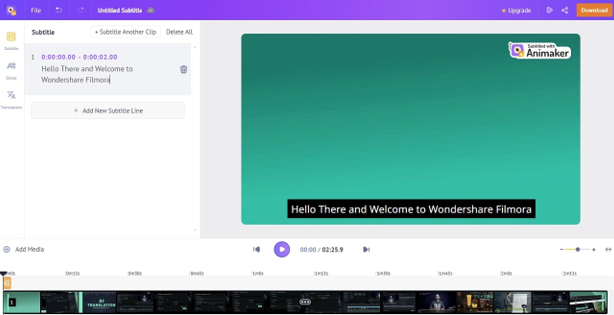
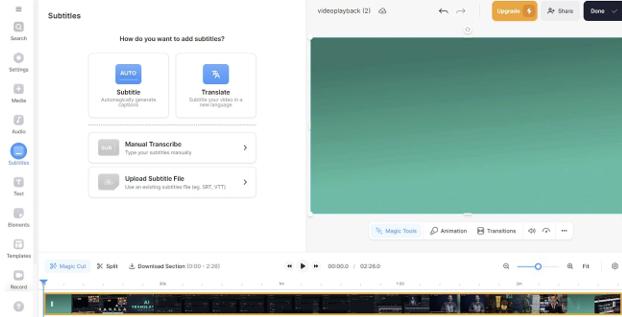
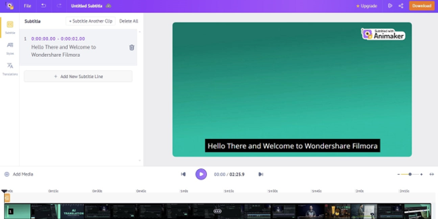
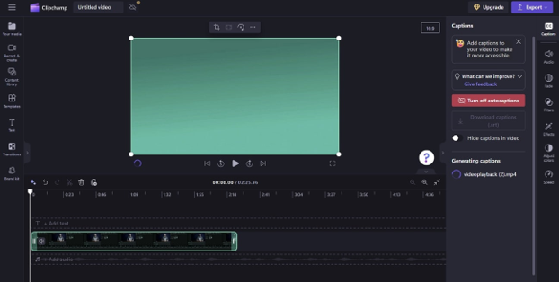
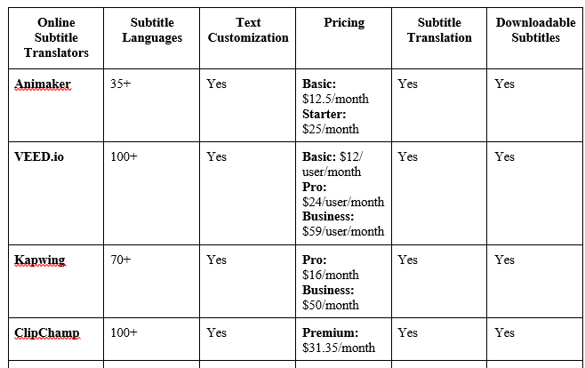

Connecting with different parts of the world by sharing videos and news is a great means of developing cultural understanding. However, manual translation is usually difficult and is vulnerable to inaccuracy. Online subtitle translators are gaining popularity as they provide a quick and efficient method of translating videos.
An online video subtitle translator that uses AI to recognize speech and generate downloadable subtitles within seconds. It offers customizable subtitles and the option to translate into multiple languages.
Animaker stands out as a top online subtitle translator, offering efficiency, accuracy, and customization options for users seeking to create multilingual content seamlessly. Whether you're a content creator, marketer, or educator, Animaker provides the tools necessary to make your videos more accessible and engaging to a global audience.
VEED.io is a free subtitle translator that allows users to translate video subtitles online for free. It offers customizable animations, transitions, and automatic highlighting of important words.
VEED.io is a versatile online subtitle translation tool that empowers users to translate video subtitles with ease. This free platform offers a wide range of customizable features, making it a popular choice among content creators, educators, and businesses.
A free online subtitle translation tool that creates word-by-word subtitles in 70 languages. It offers editing options for subtitle font, design, style, and location, and allows the insertion of emojis into subtitles.
Kapwing is a versatile and user-friendly subtitle translation tool that offers robust features and customization options, making it an ideal choice for anyone looking to create professional-quality subtitles for their videos.
ClipChamp transcribes audio and videos by auto-keeping in with the accents and dialects. It automatically filters offensive language in subtitles, separates audio from videos, and facilitates auto synchronization of audio with subtitles.
ClipChamp is an innovative online subtitle translation tool that simplifies the process of transcribing and translating audio and videos. With its advanced features and user-friendly interface, ClipChamp has become a popular choice among content creators, educators, and businesses alike.
We have already discussed a brief overview of the above-enlisted subtitle translators online. Now, let’s go for the side-by-side comparison of these tools to assist you in choosing the best of them:
All in all, subtitle translation is quite necessary to make the video content better accessible and understandable for everyone. Therefore, this guide has helped you with introducing the top-level subtitle translators online along with their benefits. Also, we have shared with you an ultimate solution for this purpose in the form of Wondershare Filmora.